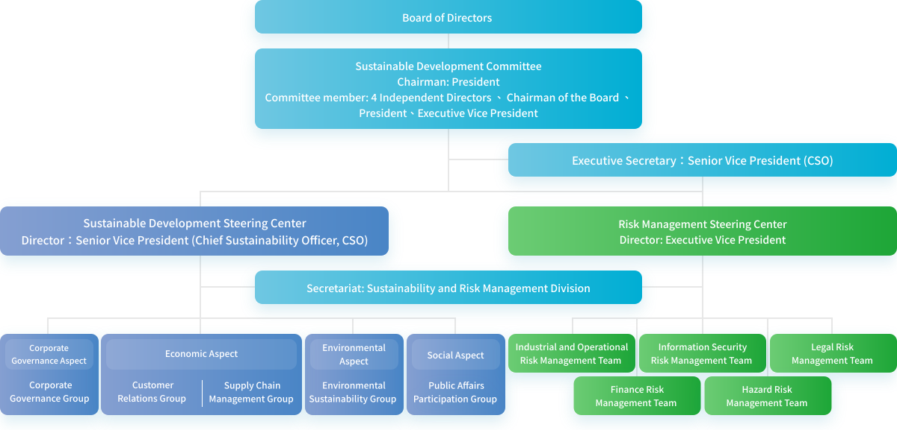
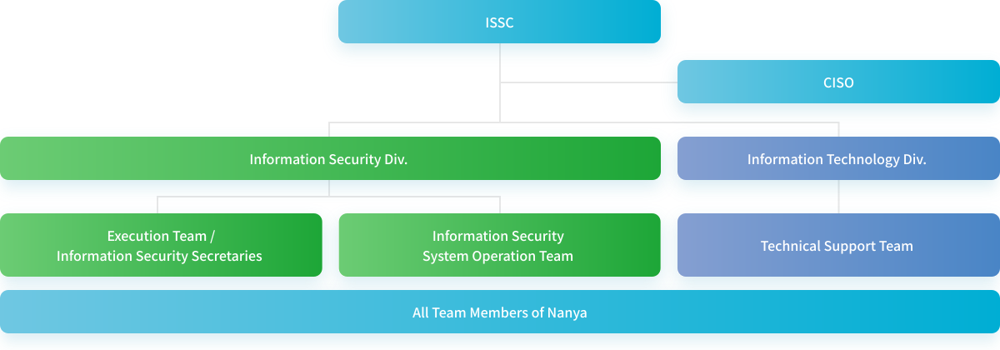
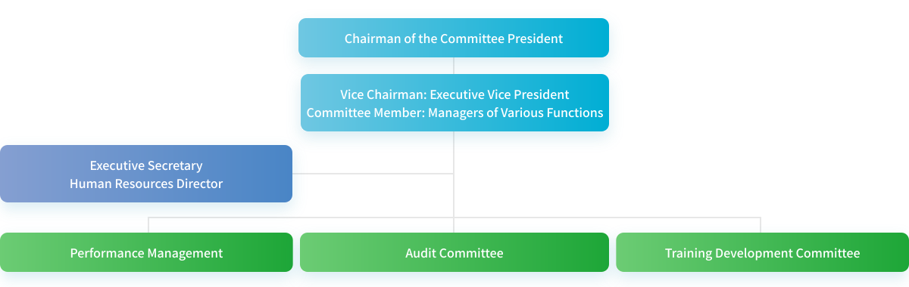
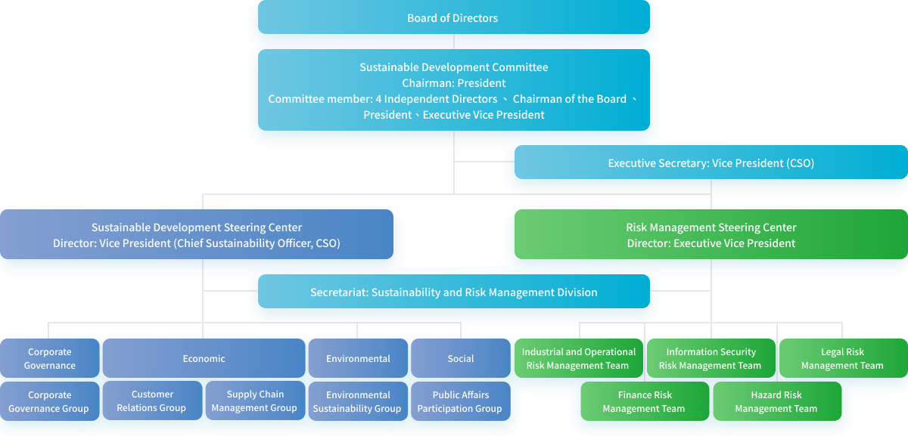
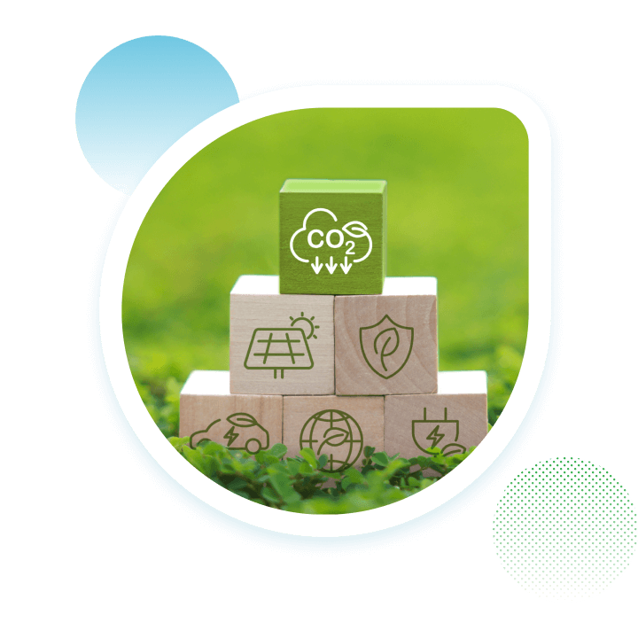

ESG Structure
Sustainability Organization and Governance
Nanya Technology officially upgraded its Sustainable Development Committee to a functional committee under the board of directors in August 2022. The committee consists of the Chairman of the Board, 4 Independent Directors, and 2 Executive Directors. The members collectively appoint the President as the Chairman, while the Chief Sustainability Officer (CSO) serves as the reporter. The committee supervises the implementation of sustainable development and risk management efforts. Since its establishment, we have regularly reported on sustainability and risk projects during board meetings twice a year. It regularly reviews the Company's sustainable development strategy, vision, goals, implementation guidelines, and results as well as routinely tracks risk management. This process ensures members of the Sustainable Development Committee and the board of directors are well-informed on the progress of the Company's sustainability initiatives, the goals set for material issues in the coming year, the implementation status of goals for the previous year, key highlights, and stakeholder engagement, thereby raising sustainability governance to a higher level.
Sustainable Development Steering Center And The Risk Management Steering Center
The Sustainable Development Committee delegates the implementation of sustainability and risk management initiatives to the Sustainable Development Steering Center and the Risk Management Steering Center. The Executive Vice President and Vice President serve as the Directors, and the Sustainability and Risk Management Division under the President's Office serve as the Secretariat to continue communicating the importance of sustainable development to business administration. The division is responsible for convening Sustainable Development Quarterly Meetings and Risk Management Quarterly Meetings. It coordinates and controls various action plans and risk categories, while integrating and supervising the execution progress and outcomes of corporate governance and economic, social, and environmental sustainability. This ensures effective communication both horizontally and vertically across the organization, driving the achievement of sustainable development.
The Chief Sustainability Officer
The Chief Sustainability Officer (CSO) is responsible for reporting to members of the Sustainable Development Committee and maintaining strong engagement with stakeholders to communicate progress on sustainable development issues. The CSO also ensures smooth cooperation with experts across various sustainability topics, and fosters cross-departmental communication within the Company, with a focus on achieving sustainability goals and promoting implementation guidelines. In 2025, there were no critical events that required communication with the Board of Directors.
Nanya Technology Sustainable Development Committee

-
Four aspects
The corporate governance, economic, social, and environmental aspects are led by corporate governance, finance, human resources, and EHS supervisors respectively.
-
Four meetings
The Committee reports to the President quarterly on the implementation and results of sustainable development affairs, establishing key projects and performance indicators.
-
Five working groups
Five working groups are set up, including corporate governance, customer relations, supply chain management, public affairs participation, and environmental sustainability.
Committees in Nanya
- Information Security Steering Committee
- Talent Cultivation and Development Committee
- Sustainable Development Committee
-
Information Security Steering Committee

-
Talent Cultivation and Development Committee

-
Sustainable Development Committee

Key points of the Sustainable Development

- Regularly reviewed the achievement of annual targets and key performance indicators (KPIs).
- Promoted climate change management, strengthened greenhouse gas inventory and reduction initiatives, and aligned with TCFD and IFRS S2 disclosure requirements.
- Introduced financial quantification analysis of climate-related risks and opportunities, and progressively established mechanisms linking scenario analysis with internal decision-making.
- Enhanced sustainable supply chain management, implemented supplier assessment, audit, and guidance mechanisms, and promoted capacity building and sustainable mutual prosperity for key suppliers.
- Strengthened corporate governance and risk management mechanisms by integrating enterprise risk management (ERM) with sustainability issues, thereby enhancing the Board of Directors' oversight function.
- Promoted Human Rights Due Diligence and continued to monitor international human rights issues such as forced labor and anti-discrimination.
- Deepened stakeholder communication, collected feedback through diverse channels, and responded to material issues.
- Continuously optimized the quality of sustainability information disclosure, refined the content of the Sustainability Report, and improved alignment with international rating and assessment agencies.
- The publication of Nature and Climate Report reports to integrate a management framework for nature- and climate-related risks, thereby building a green, low-carbon value chain.
If you are using an IE11 or lower version of the browser, we recommend upgrading to an Edge browser, or using other browser software, Google Chrome, Firefox, and a resolution of 1024 x 768 or higher for the best browsing experience. This website uses cookies to enhance your experience and statistics on network traffic. By continuing to use this website you agree to our use of cookies.
Our Privacy and Cookies Policy provides more information about the use and disabling of cookies.